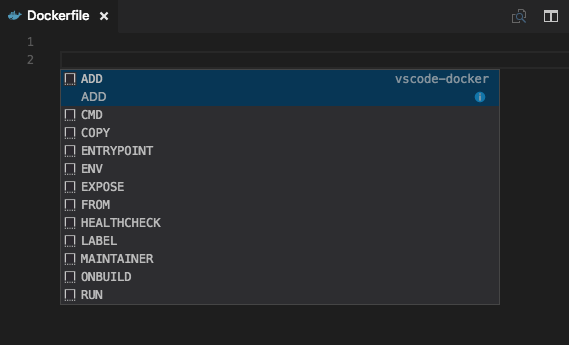
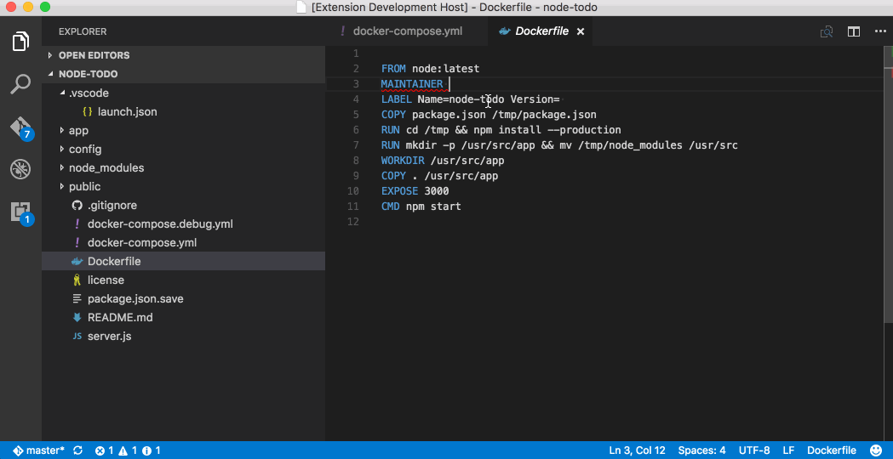

Working with Docker
Docker is a very popular
container platform that lets you easily package, deploy, and
consume applications and services. Whether you are a seasoned
Docker developer or just getting started, Visual Studio Code
makes it easy to author Dockerfile and
docker-compose.yml files in your workspace.
Install the Docker extension
Docker support for VS Code is provided by an extension. To
install the Docker extension, open the Extension Viewlet by
pressing kb(workbench.view.extensions) and search
for vscode-docker to filter the results. Select
the
Docker Support
extension.

While here, you can install many other extensions to make you more productive with VS Code.
Tip: The extensions are dynamically queried. Click on an extension tile to read the description and reviews to decide which extension is best for you. See more in the Marketplace.
Dockerfiles
With Docker, you can build images by specifying the step by
step commands needed to build the image in a
Dockerfile. A Dockerfile is just a text file that
contains the build instructions.
VS Code understands the structure of Dockerfiles as well as the available set of instructions, meaning we can give you a great experience when authoring these files in the tool.
-
Create a new file in your workspace named
Dockerfile -
Press
kb(editor.action.triggerSuggest)to bring up a list of snippets corresponding to validDockerfilecommands

-
Press
kbstyle(Tab)to move between fields within the snippet. For example, with theCOPYsnippet you can fill in thesourceand then presskbstyle(Tab)to move to thedestfield.

In addition to snippets for authoring your
Dockerfile, Visual Studio Code will provide you
with a description of any Docker command you hover over with
the mouse. For example, when hovering over
WORKDIR you will see the following.

For more information on Dockerfiles, check out Dockerfile best practices on docker.com.
Docker Compose
Docker Compose
lets you define and run multi-container applications with
Docker. You define what the shape of these containers look
like with a file called docker-compose.yml.
Visual Studio Code's experience for authoring
docker-compose.yml is also very rich, providing
IntelliSense for valid Docker compose directives and it will
query Docker Hub for metadata on public Docker images.
-
Create a new file in your workspace called
docker-compose.yml - Define a new service called
web: -
On the second line, bring up IntelliSense by pressing
kb(editor.action.triggerSuggest)to see a list of all valid compose directives.

-
For the
imagedirective, you can presskb(editor.action.triggerSuggest)again and VS Code will query the Docker Hub index for public images.

VS Code will first show a list of popular images along with
metadata such as the number of stars and description. If you
continue typing VS Code will query the Docker Hub index for
matching images, including searching public profiles. For
example, searching for Microsoft will show you
all the public Microsoft images.

Docker commands
Many of the most common Docker and docker-compose commands are
built right into the
Command Palette
(kb(workbench.action.showCommands)).

Dockerfile linting
You can enable linting of Dockerfile files through the
docker.enableLinting
setting. The extension uses the
dockerfile_lint
rules based linter to analyze the Dockerfile. You can provide
your own customized rules file by using the
docker.linterRuleFile setting. You can find
more information
on how to create rules files as well as
sample rules files
in the
dockerfile_lint
project.

Running commands on Linux
By default, Docker runs as the root user on Linux, requiring
other users to access it with sudo. This
extension does not assume root access, so you will need to
create a Unix group called "docker" and add users to it.
Instructions can be found here:
Create a Docker group